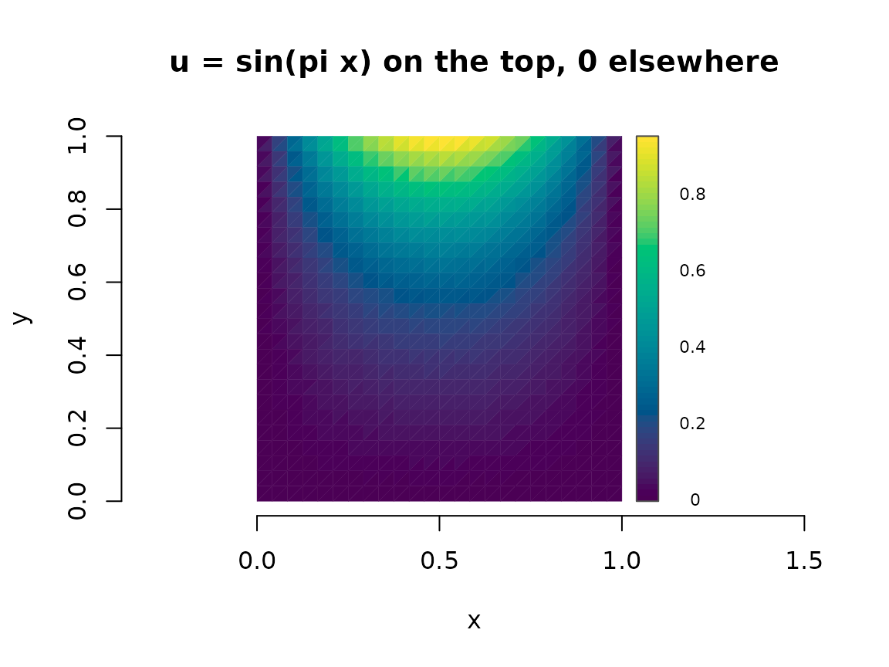
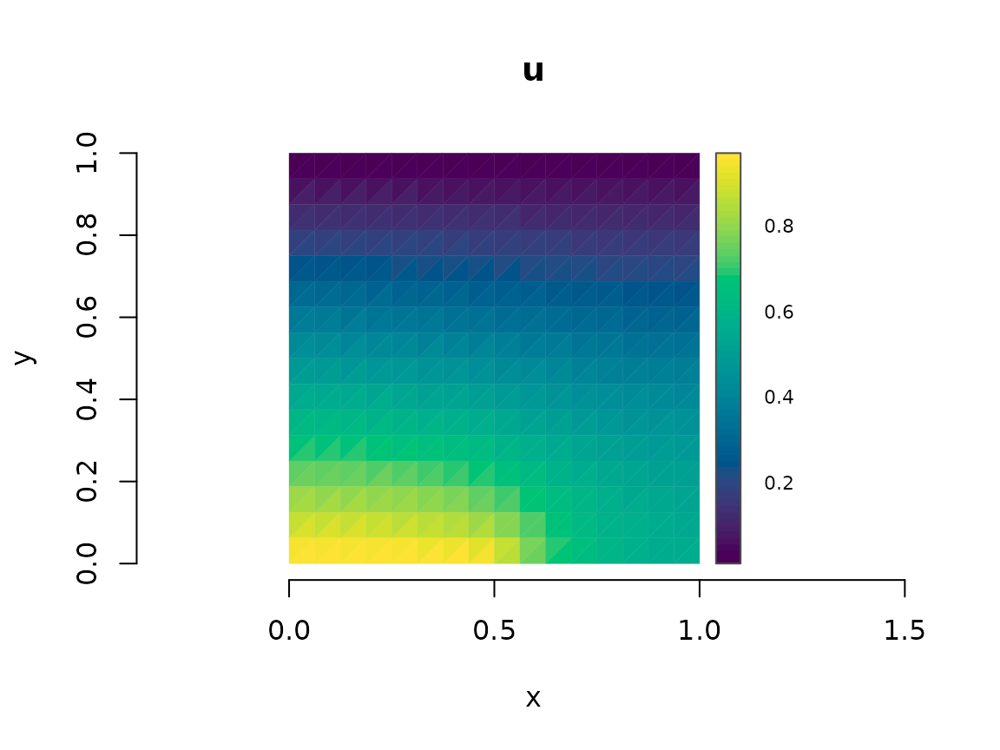

Boundary conditions are selected by marker. Each
boundary edge has one marker; "boundary" stands for all
edges. Edges without a condition get the natural condition k\,\partial u/\partial n = 0 (no flux).
| Condition | Constructor | Meaning | Enters the weak form as |
|---|---|---|---|
| Dirichlet | dirichlet_bc(value, marker) |
u = g | eliminated degrees of freedom |
| Neumann | neumann_bc(flux, marker) |
k\,\partial_n u = h | +\int_{\Gamma_N} h v\,ds in L(v) |
| Robin | robin_bc(alpha, value, marker) |
k\,\partial_n u + \alpha u = r | +\int \alpha u v\,ds in a, +\int r v\,ds in L |
Values may be numbers, function(x, y) or, in
time-dependent problems, function(x, y, t). A function
counts as time dependent when its third argument is named
t; other extra arguments keep their defaults. The Robin
coefficient alpha must not depend on time (the Robin matrix
is assembled once). Non-finite values (NA,
NaN, Inf) are rejected.
Dirichlet conditions
Dirichlet data are imposed by nodal interpolation at the boundary degrees of freedom and eliminated from the system. When two conditions share a degree of freedom (a corner), the one listed last wins.
mesh <- pde_mesh_rectangle(nx = 24)
bcs <- list(dirichlet_bc(0, "boundary"),
dirichlet_bc(function(x, y) sin(pi * x), "top"))
s <- solve_pde(poisson_problem(mesh, source = 0, boundary = bcs))
plot(s, main = "u = sin(pi x) on the top, 0 elsewhere")
Mixed Dirichlet and Neumann conditions
For u = \sin(\pi x)\sin(\pi y), the outward flux on the top edge is \partial u/\partial y = -\pi \sin(\pi x). With Dirichlet conditions on the other three sides the method keeps its optimal orders:
exact <- function(x, y) sin(pi * x) * sin(pi * y)
f <- function(x, y) 2 * pi^2 * exact(x, y)
prob <- poisson_problem(pde_mesh_rectangle(nx = 4), source = f,
boundary = list(dirichlet_bc(0, c("bottom", "left", "right")),
neumann_bc(function(x, y) -pi * sin(pi * x), "top")))
convergence_study(prob, exact, mesh_sizes = c(8, 16, 32))
#> Mesh convergence study
#> h ndof L2 H1_semi rate_L2 rate_H1_semi
#> 0.17678 81 0.018695 0.4306 NA NA
#> 0.08839 289 0.004776 0.2174 1.969 0.9861
#> 0.04419 1089 0.001201 0.1090 1.992 0.9965Boundary integrals are evaluated with Gauss-Legendre rules on each edge and the parent element’s basis functions, so they are correct for P1 and P2.
Robin conditions
Robin conditions model heat exchange with a surrounding medium. For u = e^{x+y} on the right edge, \partial_n u = u, so \partial_n u + 2u = 3e^{x+y}:
ex <- function(x, y) exp(x + y)
prob <- elliptic_problem(pde_mesh_rectangle(nx = 4), source = function(x, y) -2 * exp(x + y),
bcs = list(dirichlet_bc(ex, c("bottom", "top", "left")),
robin_bc(2, function(x, y) 3 * exp(x + y), "right")))
convergence_study(prob, ex, mesh_sizes = c(8, 16, 32))
#> Mesh convergence study
#> h ndof L2 H1_semi rate_L2 rate_H1_semi
#> 0.17678 81 0.0138553 0.36400 NA NA
#> 0.08839 289 0.0034655 0.18220 1.999 0.9984
#> 0.04419 1089 0.0008665 0.09112 2.000 0.9996Pure Neumann problems
If no Dirichlet or Robin condition is present and there is no reaction term, constants are in the kernel of the operator: the solution exists only if the data are compatible,
\int_\Omega f\,dx + \int_{\partial\Omega} h\,ds = 0,
and then it is unique only up to a constant. pdecompR detects this
case from the assembled operator (no Dirichlet data and constants in its
kernel, which also covers robin_bc(0, ...) and variational
problems), checks the discrete compatibility condition through the
multiplier of the zero-mean constraint, and returns the solution with
zero mean. The result is labeled as gauged. With advection the operator
is not symmetric and the condition involves its left null vector, not
\int f + \int h; a defect larger than
h^2 gives a warning and a clearly
incompatible defect (above about one percent) an error. On a mesh with
several disconnected parts each part has its own constant; this case is
not detected.
m <- pde_mesh_rectangle(nx = 24)
s <- solve_pde(poisson_problem(m, source = function(x, y) 2 * pi^2 * cos(pi * x) * cos(pi * y)))
summary(s)
#> Finite-element solution (Lagrange P1)
#> mesh: 625 nodes, 1152 triangles, h = 0.05893
#> degrees of freedom: 625 (625 free)
#> matrix nonzeros: 4177
#> solver: lu, status solved
#> linear residual: 6.41e-12 (relative 1.63e-11)
#> pure Neumann: zero-mean gauge, compatibility defect -1.57e-10
#> assembly 0.006 s, solve 0.008 s
#> solution range [-0.9937, 1.003]
#> (the linear residual measures the algebraic solve, not the discretization error)Incompatible data are an error, not an arbitrary answer:
solve_pde(poisson_problem(m, source = 1))
#> Error:
#> ! Pure Neumann problem with incompatible data: compatibility defect 1 (relative 1). The problem has no solution.Balancing the source with an outflow makes the problem solvable:
s <- solve_pde(poisson_problem(m, source = 1, boundary = neumann_bc(-0.25)))
s$diagnostics$gauge$type
#> [1] "zero mean"Periodic conditions
periodic_bc(from, to, offset) identifies the degrees of
freedom on the boundary part to with those on
from: a node at x on
to equals the node at $x - $ offset on
from. The two parts must be meshed compatibly (matching
node positions), which structured meshes and refinement guarantee;
unmatched nodes are an error. The solver eliminates the identified
unknowns with a constraint matrix u = P
u_r and solves P^\top A P u_r = P^\top
b.
Here the solution is periodic in x and vanishes on the bottom and top:
u <- function(x, y) cos(2 * pi * x) * sin(pi * y)
f <- function(x, y) 5 * pi^2 * u(x, y)
bc <- list(periodic_bc("left", "right", offset = c(1, 0)), dirichlet_bc(0, c("bottom", "top")))
e <- sapply(c(8, 16, 32), function(n) {
errornorm(solve_pde(elliptic_problem(pde_mesh_rectangle(nx = n), source = f, bcs = bc)), u)
})
data.frame(n = c(8, 16, 32), L2 = e, rate = c(NA, log2(e[-3] / e[-1])))
#> n L2 rate
#> 1 8 0.046736961 NA
#> 2 16 0.012125241 1.946551
#> 3 32 0.003060052 1.986385With periodicity in both directions there is no Dirichlet condition and the problem is a pure Neumann problem in disguise: the data must have zero mean and the solution is fixed by the zero-mean gauge. Corners are identified transitively, so all four corners become one unknown.
u2 <- function(x, y) sin(2 * pi * x) * cos(2 * pi * y)
both <- list(periodic_bc("left", "right", c(1, 0)), periodic_bc("bottom", "top", c(0, 1)))
s <- solve_pde(elliptic_problem(pde_mesh_rectangle(nx = 16), source = function(x, y) 8 * pi^2 * u2(x, y),
bcs = both))
errornorm(s, u2)
#> [1] 0.02341302
#> attr(,"norm")
#> [1] "L2"
#> attr(,"gradient")
#> [1] "exact"
solve_pde(elliptic_problem(pde_mesh_rectangle(nx = 4), source = 1, bcs = both))
#> Error:
#> ! Pure Neumann problem with incompatible data: compatibility defect 1 (relative 1). The problem has no solution.Periodic conditions are supported for elliptic problems. Time-dependent, nonlinear and reaction-diffusion problems reject them with an error instead of ignoring them.
Markers for imported meshes
Meshes read from Gmsh carry their physical line names as markers.
Otherwise set_boundary_marker() can label edges
geometrically, once, after which all selection is by marker:
m <- set_boundary_marker(pde_mesh_rectangle(nx = 16), "hot", function(x, y) y < 1e-12 & x < 0.5)
s <- solve_pde(poisson_problem(m, source = 0,
boundary = list(dirichlet_bc(1, "hot"), dirichlet_bc(0, "top"))))
plot(s)